<!-- ... -->
<dependencies>
<!-- ... -->
<dependency>
<groupId>org.junit.jupiter</groupId>
<artifactId>junit-jupiter</artifactId>
<version>5.8.1</version>
<scope>test</scope>
</dependency>
<!-- ... -->
</dependencies>
<build>
<plugins>
<plugin>
<artifactId>maven-surefire-plugin</artifactId>
<version>2.22.2</version>
</plugin>
<!-- ... -->
</plugins>
</build>
<!-- ... -->Automatisation des tests
Introduction
Qui suis je ?
Déroulement du cours
N’hésitez pas à interrompre ou à intervenir
Merci de ne pas faire de bruit :)
Le contrôle continu (DS)
Comment ? Un examen papier, questionnaire + exercises "pseudo-code"
Quand ? Les deux dernières heures en Amphi 2
Les sources
Découvrez l’importance des tests
Je viens de rework une fonction de 900 lignes sans aucun test
Coder c’est tester !
Tester, c’est douter ⇒ FAKE !
Tester ce n’est pas que vérifier que son application marche!
C’est savoir rapidement quand l’application ne marche plus
où dans le code
et pourquoi
Construire sa couverture de tests = construire ses TNR (Tests de Non Régression)
Apprendre à coder c’est apprendre à tester
Impact sur la conception
Modularité & testabilité
Plus un code est modulaire, plus il est facile de le tester unitairement.
TDD pour Test Driven Development
Il s’agit d’une technique de conception où le programmeur écrit d’abord le test avant de produire le moindre code.
Le développeur écrit ensuite le code pour que le test passe.
Une fois son test finalisé, il pourra être libre de refactorer autant qu’il le souhaite jusqu’à obtenir un code « propre ».
C’est une idée simple mais complexe à mettre en œuvre.
Courbe d’apprentissage plus lente de prime abord.
Pourquoi ces pratiques ?
Vérifier la bonne compréhension des fonctionnalités
Meilleure couverture de tests automatisés
Facilité d’écriture des tests avant le code « métier »
Ils servent à promouvoir et vérifier la qualité et la fiabilité du code
Enfin, jusqu’à une certaine limite !!
Comment appliquer le TDD ?
Ecriture d’un test pour une fonctionnalité
Le test est « failed »
Codage de la fonctionnalité minimale
Vérification du cas passant
Répéter l’opération en enrichissant la fonctionnalité en refactorisant
Il s’agit de la méthodologie « Red / Green / Refactor ».
Le cycle Red, Green, Refactor doit être le plus court possible. L’objectif est de rédiger le minimum de code possible à chaque cycle.
L’idée c’est d’écrire le test qui vous permet de rédiger le moins de code possible.
Cette méthode vous apprend à ne refactoriser que de Green à Green.
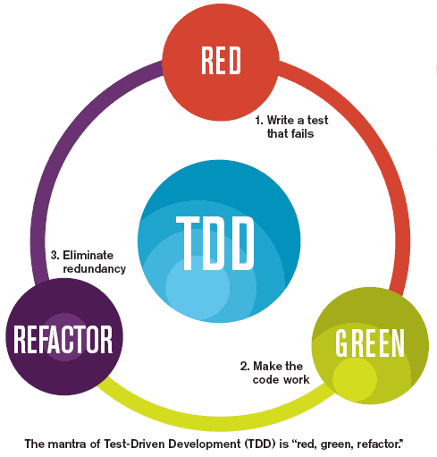
Pour aller plus loin, le BDD (Behavior Driven Development)
C’est une pratique Agile créée par Dan North en 2003 qui a pour but de créer des tests fonctionnels avec un langage naturel compris de tous. Par exemple, le langage Gherkin (Etant donné que …, Quand …, Alors …).
Une fois le test bien écrit, le développeur n’a plus qu’à définir un comportement pour chaque fonction résultant du découpage du test.
L’intérêt du BDD est de pouvoir créer un référentiel facilement réutilisable, afin de créer d’autres tests fonctionnels sans qu’il y ait nécessité de redévelopper du nouveau code.
Exemple
Test 1 :
Etant donné que je suis le client sur la fiche produit (→ Nouvelle fonction n°1)
Quand je clique sur ajouter au panier sur le produit d’identifiant "255" (→ Nouvelle fonction n°2)
Et que le stock est à "3" (→ Nouvelle fonction n°3)
Alors le produit se rajoute au panier (→ Nouvelle fonction n°4)
Test 2 :
Etant donné que je suis le client sur la fiche produit (→ Réutilisation de la fonction n°1)
Quand je clique sur ajouter au panier sur le produit d’identifiant "42" (→ Réutilisation de la fonction n°2)
Et que je clique sur retirer le produit d’identifiant "255" du panier (→ Nouvelle fonction n°5)
Alors le panier reste vide (→ Nouvelle fonction n°6)
BDD vs TDD
TDD va permettre de guider les développements, fonction par fonction (technique).
BDD permet de tester l’ensemble des comportements attendus par la User-Story à développer (fonctionnel).
TDD et BDD sont donc complémentaires.
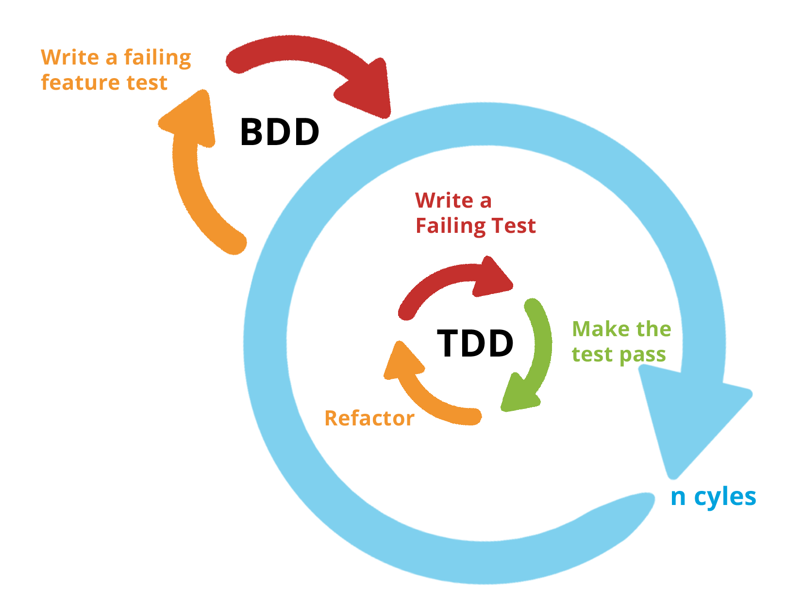
Exemple
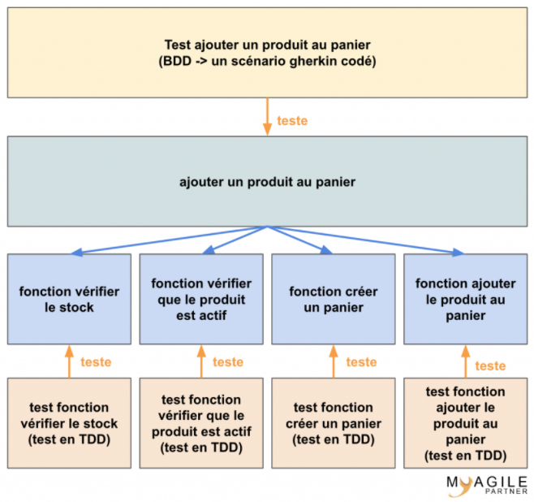
Tour d’horizon des différents types de tests
Les tests unitaires
Les tests unitaires consistent à tester individuellement les composants d’une application.
On pourra ainsi valider la qualité du code et les performances d’un module.
Initiés par le développeur lui-même dont l’optique est de vérifier son code au niveau du composant qu’il doit réaliser.
Ces tests doivent être automatisés rapidement pour permettre de valider la non régression du fonctionnement du composant lors des multiples livraisons des différentes versions du logiciel, surtout en process Agile.
Les tests d’intégration
Ces tests sont exécutés pour valider l’intégration des différents modules entre eux et dans leur environnement d’exploitation définitif.
Ils permettront de mettre en évidence des problèmes d’interfaces entre différents programmes.
Exécutés par un testeur à l’interne ou externalisés auprès d’une TRA (Tierce Recette Applicative).
En interne ou externalisé, l’objectif à atteindre est le même : s’assurer que plusieurs composantes du logiciel interagissent conformément aux cahiers des charges et délivrent les résultats attendus.
Les tests fonctionnels
Ces tests ont pour but de vérifier la conformité de l’application développée avec le cahier des charges initial.
Ils sont donc basés sur les spécifications fonctionnelles et techniques.
L’écriture de tests fonctionnels automatisés représente un effort important.
Ces tests peuvent être manuels en suivant un plan de validation :
rédigé au préalable,
teste la conformité du produit par rapport aux besoins client (Use Cases);
Le résultat de ces tests sont documentés dans un cahier de recette.
Le testeur déroule les fonctionnalités du logiciel, il veille ici à scruter les différentes actions du système.
Il observe le comportement du logiciel vis-à-vis des fonctionnalités souhaitées et attendues par le client.
Il compare chacune des fonctionnalités de la plateforme avec les spécifications indiquées dans le cahier des charges.
Les tests d’acceptation
Que pouvez-vous accepter pour valider une fonctionnalité ?
Conformité des fonctionnalités demandées.
Les temps de réponses sont-ils corrects (chargement d’une page HTML, réponse d’une API, …) ?
Il s’agit ici de valider l’adéquation du logiciel aux spécifications du client.
Sur la base d’un cahier des charges arrêté et établi en amont avec le client, ce test rassure sur la conformité du logiciel aux critères d’acceptation et aux besoins des cibles.
Ils sont donc généralement réalisé par le client final ou les utilisateurs : on appelle aussi cela la « recette » du logiciel.
Les tests de charge et de performance
Ce sont des tests permettant de mesurer les temps de réponses du système en fonction des sollicitations.
Les tests de charge simulent un nombre prédéfini d’utilisateurs en simultané pour mesurer le dimensionnement de l’infrastructure nécessaire (serveurs, bande passante sur le réseau, …)
Les tests de performance permettent de récupérer des métriques (temps de réponses, percentile CPU, RAM, etc).
Le test de montée en charge permet d’évaluer sa capacité à supporter de plus en plus d’usagers tout en maintenant une expérience utilisateur optimale et un fonctionnement correspondant aux cahier des charges.
Exemple de mesure du 90e centile
Statistiquement, pour calculer la valeur du 90e centile (aussi appelé
p90 latency), il faut :Trier les temps de réponse.
Supprimer 10% des valeurs les plus hautes.
La valeur la plus haute restante est le 90e centile (90th percentile).
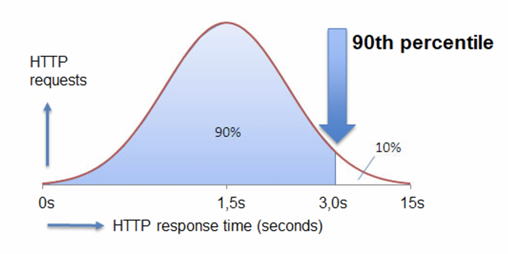
Les tests de mutations (mutation testing)
Il s’agit de rendre le code “malade” à l’aide de mutations et d’observer la capacité de nos tests à diagnostiquer l’anomalie introduite.
Les mutations appliquées au code peuvent être de différentes formes comme :
la modification de la valeur d’une constante,
le remplacement d’opérateurs,
la suppression d’instructions, etc.
Si les tests restent au vert malgré les mutations du code, alors ils ne suffisent pas à détecter la régression amenée par le mutant. On parle dans ce cas de mutations survivantes.
A l’inverse, si au moins un test passe au rouge lors de l’exécution d’un code muté, alors la mutation est dite tuée (sous entendu par le test).
On peut ainsi être en mesure de calculer un score de mutation : (nombre mutants tués / nombre mutants générés) * 100.
Plus le score est élevé, plus nos tests sont robustes.
Un outil comme Pitest (Java) permet par exemple de générer automatiquement des mutants et de les exécuter pour vérifier le comportement des tests.
Les tests de mutation sont une forme de test en boîte blanche.
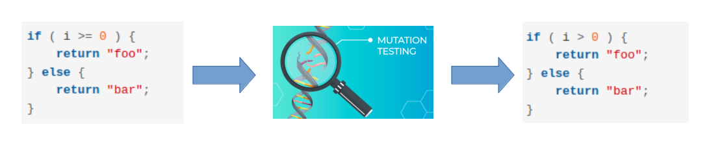
Pyramide des tests
Quatre niveaux de tests logiciels sont représentés dans la Pyramide des tests.
Pour automatiser des tests, il faut toujours commencer par le bas de la pyramide car ces tests sont plus rapides à mettre en place et donc moins coûteux.
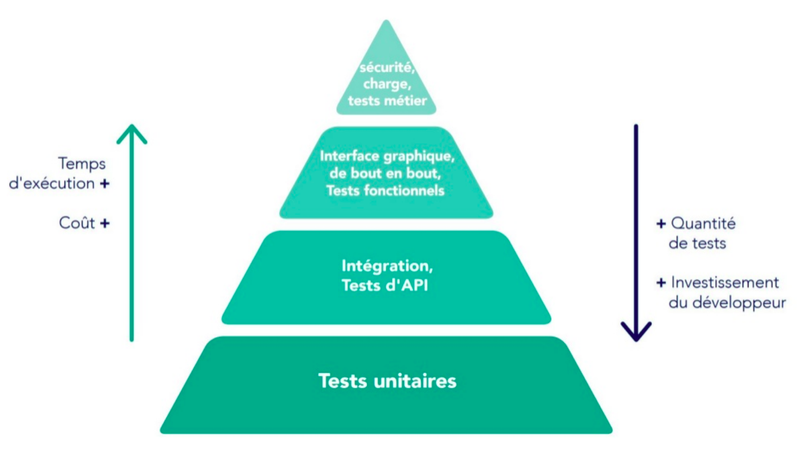
Martin Fowler a défini le terme Pyramide des tests, expliquant que plus on monte dans la pyramide, plus on couvre d’éléments fonctionnels, mais plus ils sont lents et coûteux à exécuter.
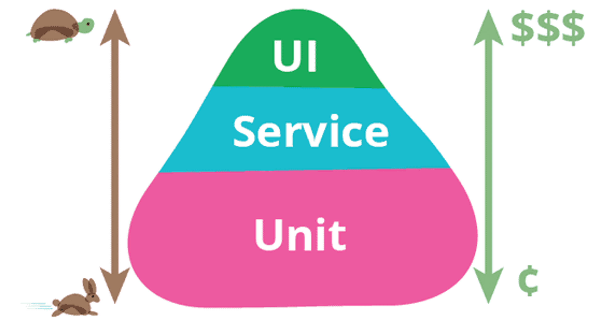
Proportions des tests
Les tests unitaires sont à la base de la Pyramide des tests.
Ils sont les plus nombreux et couvrent chaque module de manière indépendante.
Attention, le but des tests unitaires n’est pas de tester chaque fonction du code.
Ils doivent tester un comportement mais tout en restant isolés des autres modules.
Ils permettent également de tester plusieurs scénarios de fonctionnement d’une fonctionnalité suivant les paramètres qu’elle prend en entrée (cas passants et non passants).
Les tests fonctionnels, appelés aussi tests d’intégration, viennent tester une fonctionnalité dans son ensemble.
Ils reproduisent un comportement et appellent tous les modules nécessaires à son bon fonctionnement.
Ils permettent de vérifier que le comportement est bien celui attendu.
Ils peuvent abstraire les briques extérieures à votre application (simulation d’un appel à une API par exemple).
Les tests End-to-End, sont le plus souvent retrouvés dans les projets front-end.
Ils reproduisent un comportement utilisateur en manipulant un navigateur « Headless » (PhantomJS, HtmlUnit, etc) et en vérifiant que les actions menées fonctionnent correctement.
Dans le cas du développement d’une API Rest, ces tests peuvent être mis en place grâce à des outils tels que Postman ou Karaté (possibilité d’intégrer ces tests dans un pipeline d’Intégration Continue).
Les frameworks de tests
Il existe différents langages de programmation que vous pouvez envisager pour réaliser des tests automatisés, tels que Java, Python, C#, etc.
Un panel plus ou moins important de frameworks et d’outils est disponible pour réaliser ces tests (manuels ou automatisés).
Les frameworks pour les tests unitaires
JUnit, TestNG (java)
Jasmine, Karma, Mocha (javascript)
nUnit (.Net)
SimpleTest (PHP)
dUnit (Delphi)
cppUnit (C++) etc..
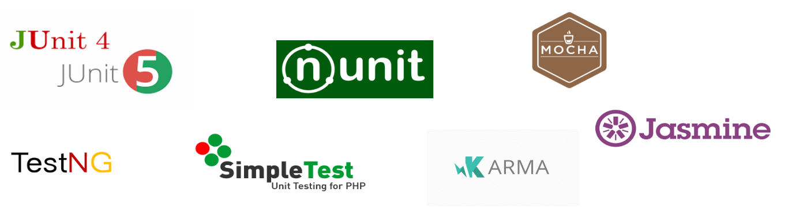
Les frameworks pour le mocking
Mockito, EasyMock, PowerMock (java)
Sinon JS, Jest, Rhino Mocks (javascript)
TypeMock, Moq (.Net)
Les outils de tests de charge
JMeter, Gatling, Taurus, Locust
Les outils d’analyse de couverture de tests
Cobertura, JaCoCo (java)
Coverage.py (python)
Bullseye Coverage (C++, C)
NCover, dotCover (.Net)
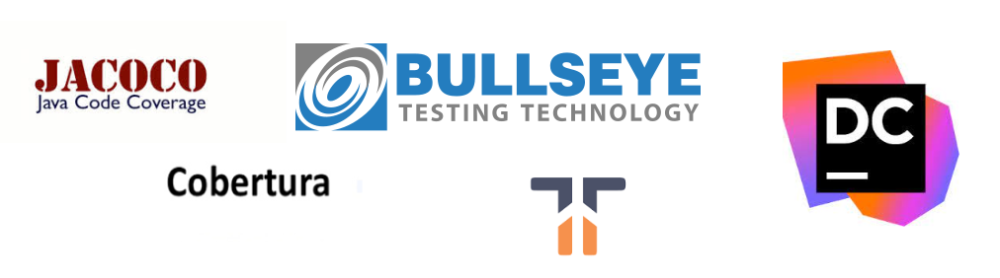
Et bien d’autres
Tests manuels (SoapUI, Postman, Bruno, Insomnia REST Client, Hoppscotch)
Tests d’API (frameworks REST Assured, Karate)
Outils de tests de sécurité
type SAST (Source Code Analysis Tools)
type DAST (Dynamic Application Security Testing)
Tests IHM (GUI testing) comme Seleniumn, QTP ou Cucumber
…
JUnit 5
une API pour écrire des tests
un mécanisme pour découvrir et lancer les tests
une API pour lancer les tests (pour les outils comme Eclipse)
Contrairement aux versions précédentes de JUnit, JUnit 5 est composé de plusieurs modules différents issus de trois sous-projets différents :
JUnit 5 = JUnit Platform + JUnit Jupiter + JUnit Vintage
Intégration dans un projet maven :
Exécution dans un projet maven :
Le plugin Maven Surefire permet d’exécuter l’ensemble des tests unitaires d’un projet (méthodes annotées @Test).
Il recherchera les classes de tests dont les noms complets correspondent aux modèles suivants :
**/Test*.java
**/*Test.java
**/*Tests.java
**/*TestCase.java
Spring Boot 2.6 embarque directement JUnit5 par l’intermédiaire de sa dépendance spring-boot-starter-test.
1er test exemple :
Junit 4 :
import static org.junit.Assert.assertTrue;
import org.junit.Test;
public class BasicTest {
@Test
public void simpleTest1() {
LOGGER.info("--- Running test junit 4 -> 1 ---");
assertTrue(true);
}
}Junit 5 :
import static org.junit.jupiter.api.Assertions.assertTrue;
import org.junit.jupiter.api.Test;
class BasicTest {
@Test
void simpleTest1() {
LOGGER.info("--- Running test junit 5 -> 1 ---");
assertTrue(true);
}
}Note | Une classe / méthode de test Junit 5 peut être avec une visibilité private, non nécessairement public. |
Compatibilité JUnit 3/4 et JUnit 5
Il est possible dans un projet d’exécuter des tests Junit 3/4 existants et d’y ajouter des tests Junit Jupiter.
<!-- ... -->
<dependency>
<groupId>junit</groupId>
<artifactId>junit</artifactId>
<version>4.13.2/version>
</dependency>
<dependency>
<groupId>org.junit.vintage</groupId>
<artifactId>junit-vintage-engine</artifactId>
<version>5.8.1</version>
<scope>test</scope>
</dependency>
<!-- ... -->Annotations
Les annotations de base se trouvent dans le package org.junit.jupiter.api du module junit-jupiter-api.
Annotation | Description |
@Test | Indique qu’une méthode est une méthode de test. Contrairement à l’annotation @Test de JUnit 4, cette annotation ne déclare aucun attribut. |
@ParameterizedTest | Indique qu’une méthode est un test paramétré. |
@RepeatedTest | Indique qu’une méthode est un test template pour un test répété. |
@TestFactory | Indique qu’une méthode est un test factory pour des tests dynamiques. |
Annotation | Description |
@DisplayName | Déclare un nom d’affichage personnalisé pour la classe de test ou la méthode de test. |
@DisplayNameGeneration | Déclare un générateur de nom d’affichage personnalisé pour la classe de test. |
@BeforeEach | Indique que la méthode annotée doit être exécutée avant chaque méthode @Test, @RepeatedTest, @ParameterizedTest ou @TestFactory dans la classe actuelle. Analogue à @Before de JUnit 4. |
@AfterEach | Indique que la méthode annotée doit être exécutée après chaque méthode @Test, @RepeatedTest, @ParameterizedTest ou @TestFactory dans la classe actuelle. Analogue à @After de JUnit 4. |
@BeforeAll | Indique que la méthode annotée doit être exécutée avant toutes les méthodes @Test, @RepeatedTest, @ParameterizedTest et @TestFactory dans la classe actuelle. analogue à @AfterClass de JUnit 4. |
@AfterAll | Indique que la méthode annotée doit être exécutée après toutes les méthodes @Test, @RepeatedTest, @ParameterizedTest et @TestFactory dans la classe actuelle. analogue à @AfterClass de JUnit 4. |
Annotation | Description |
@Nested | Indique que la classe annotée est une classe de test imbriquée non statique. Les méthodes @BeforeAll et @AfterAll ne peuvent pas être utilisées directement dans une classe de test @Nested à moins que le cycle de vie de l’instance de test "par classe" ne soit utilisé. |
@Tag | Utilisé pour déclarer des tags pour les tests de filtrage, que ce soit au niveau de la classe ou de la méthode. analogue aux groupes de test dans TestNG ou aux catégories dans JUnit 4. |
@Disabled | Utilisé pour désactiver une classe de test ou une méthode de test. analogue à @Ignore de JUnit 4. |
@Timeout | Utilisé pour faire échouer un test, une fabrique de tests, un modèle de test ou une méthode de cycle de vie si son exécution dépasse une durée donnée. |
@ExtendWith | Utilisé pour enregistrer les extensions de manière déclarative. |
Exemple d’utilisation des annotations de base
import static org.junit.jupiter.api.Assertions.assertTrue;
import static org.junit.jupiter.api.Assertions.fail;
import org.junit.jupiter.api.AfterAll;
import org.junit.jupiter.api.AfterEach;
import org.junit.jupiter.api.BeforeAll;
import org.junit.jupiter.api.BeforeEach;
import org.junit.jupiter.api.Disabled;
import org.junit.jupiter.api.Test;
import org.slf4j.Logger;
import org.slf4j.LoggerFactory;
public class BasicTest {
public static final Logger LOGGER = LoggerFactory.getLogger(BasicTest.class);
@BeforeAll
static void initAll() {
LOGGER.info("--- Running once before first class test junit 5 ---");
}
@BeforeEach
public void init() {
LOGGER.info("--- Running before test junit 5 ---");
}
@Test
void succeedingTest() {
LOGGER.info("--- Running test junit 5 -> 1 ---");
assertTrue(true);
}
@Test
@Disabled("Test ne marche plus mais il faut livrer")
void skipFailingTest() {
LOGGER.info("--- Running test junit 5 -> 2 ---");
fail("Failing test");
}
@AfterEach
void tearDown() {
LOGGER.info("--- Running after test junit 5 ---");
}
@AfterAll
static void tearDownAll() {
LOGGER.info("--- Running once after last class test junit 5 ---");
}
}Tests répétés
L’annotation @RepeatedTest permet de répéter plusieurs fois un même test.
Exemple :
import org.junit.jupiter.api.BeforeEach;
import org.junit.jupiter.api.DisplayName;
import org.junit.jupiter.api.RepeatedTest;
import org.junit.jupiter.api.RepetitionInfo;
import org.junit.jupiter.api.TestInfo;
class RepeatedTestsDemo {
@BeforeEach
void beforeEach(TestInfo testInfo, RepetitionInfo repetitionInfo) {
int currentRepetition = repetitionInfo.getCurrentRepetition();
int totalRepetitions = repetitionInfo.getTotalRepetitions();
String methodName = testInfo.getTestMethod().get().getName();
logger.info(String.format("About to execute repetition %d of %d for %s", //
currentRepetition, totalRepetitions, methodName));
}
@RepeatedTest(10)
void repeatedTest() {
// ...
}
@RepeatedTest(5)
void repeatedTestWithRepetitionInfo(RepetitionInfo repetitionInfo) {
assertEquals(5, repetitionInfo.getTotalRepetitions());
}
}
/*
├─ RepeatedTestsDemo ✔
│ ├─ repeatedTest() ✔
│ │ ├─ repetition 1 of 10 ✔
│ │ ├─ repetition 2 of 10 ✔
│ │ ├─ repetition 3 of 10 ✔
│ │ ├─ repetition 4 of 10 ✔
│ │ ├─ repetition 5 of 10 ✔
│ │ ├─ repetition 6 of 10 ✔
│ │ ├─ repetition 7 of 10 ✔
│ │ ├─ repetition 8 of 10 ✔
│ │ ├─ repetition 9 of 10 ✔
│ │ └─ repetition 10 of 10 ✔
│ ├─ repeatedTestWithRepetitionInfo(RepetitionInfo) ✔
│ │ ├─ repetition 1 of 5 ✔
│ │ ├─ repetition 2 of 5 ✔
│ │ ├─ repetition 3 of 5 ✔
│ │ ├─ repetition 4 of 5 ✔
│ │ └─ repetition 5 of 5 ✔
*/Cas d’usages limités : s’assurer que le résultat d’un traitement reste identique après n exécutions, qu’un traitement doit retourner une erreur au bout de n exécutions …
Data-Driven Testing (Tests paramétrés)
L’annotation @ParameterizedTest permet de répéter plusieurs fois un même test mais avec des paramètres différents (nécessite dépendance junit-jupiter-params).
Les valeurs de paramètres sont définis par l’intermédiaire d’une annotation @*Source, plusieurs techniques permettent de les alimenter.
Exemple simple d’une liste de paramètre String :
class ParameterizedTestDemo {
@ParameterizedTest
@NullSource
@EmptySource
@ValueSource(strings = {"String 1", "String 2", "\n"})
void shouldExecuteForStringList(String input) {
/* input = [ null, "", "String 1", "String 2", "\n"] */
}
}Source paramètres @ValueSource
L’annotation @ValueSource accepte les types primitifs + java.lang.String et java.lang.Class, par exemple :
@ValueSource(ints = { 1, 2, 3 })Source paramètres @EnumSource
L’annotation @EnumSource permet d’utiliser des constantes de type Enum, par exemple :
@ParameterizedTest
@EnumSource(value = Month.class, names = {"APRIL", "JUNE", "SEPTEMBER", "NOVEMBER"})
void testEnumParam(Month param) {
LOGGER.info("Exécution test enum param, valeur : " + param);
assertNotNull(param);
}Source paramètres @MethodSource
L’annotation @MethodSource permet d’exécuter une méthode statique pour générer une liste de paramètres, par exemple :
@ParameterizedTest
@MethodSource("stringProvider")
void testWithExplicitLocalMethodSource(String argument) {
assertNotNull(argument);
}
static Stream<String> stringProvider() {
return Stream.of("apple", "banana");
}
static Stream<Arguments> stringIntAndListProvider() {
return Stream.of(
Arguments.of("apple", 1, Arrays.asList("a", "b")),
Arguments.of("lemon", 2, Arrays.asList("x", "y"))
);
}Source paramètres @CsvSource
L’annotation @CsvSource permet de charger des paramètres décrits sous forme csv, par exemple :
@ParameterizedTest
@CsvSource({
"apple, 1",
"banana, 2",
"lemon, 3",
"strawberry, 4"
})
void testWithCsvSource(String fruit, int rank) {
assertNotNull(fruit);
assertNotEquals(0, rank);
}Source paramètres @CsvFileSource
L’annotation @CsvFileSource permet de charger des paramètres générés à partir d’un fichier csv, par exemple :
@ParameterizedTest
@CsvFileSource(resources = "/two-column.csv", numLinesToSkip = 1)
void testWithCsvFileSourceFromClasspath(String country, int reference) {
assertNotNull(country);
assertNotEquals(0, reference);
}
@ParameterizedTest
@CsvFileSource(files = "src/test/resources/two-column.csv", numLinesToSkip = 1)
void testWithCsvFileSourceFromFile(String country, int reference) {
assertNotNull(country);
assertNotEquals(0, reference);
}Répertoire temporaire
L’annotation @TempDir permet l’utilisation d’un répertoire temporaire pour l’ensemble des tests d’une classe (Répertoire créé dans /tmp puis supprimé automatiquement à chaque test).
Avec JUnit 4 :
@Rule
public TemporaryFolder tmpFolder = new TemporaryFolder();ou
/* Erreur d'assertion si le temporary folder ne peut être supprimé */
public TemporaryFolder folder = TemporaryFolder.builder().assureDeletion().build();ou
@ClassRule
public static TemporaryFolder globalFolder = new TemporaryFolder();Avec JUnit 5 :
/* Répertoire tmp de classe */
@TempDir
static Path sharedTempDir;
/* Répertoire tmp de méthode test */
@TempDir
File tempDir;Extensions
Contrairement aux différentes annotations d’extensions dans Junit 4 (@RunWith, @Rule, @ClassRule), le modèle d’extension JUnit Jupiter se compose d’un concept unique et cohérent : l’API Extension avec l’annotation @ExtendWith.
Exemple :
@ExtendWith(MockitoExtension.class)
@ExtendWith({ a.class, b.class })
public class ExtensionTest {
@Test
@ExtendWith(c.class)
void should_use_extensions() {
...
}
}@RunWith(SpringJUnit4ClassRunner.class) en JUnit 4 devient @ExtendWith(SpringExtension.class) en JUnit 5.
Exécutions conditionnelles de tests
Il est possible à l’aide d’annotations d’extension Junit5 d’activer ou de désactiver l’exécution de tests en fonction du contexte :
Selon le système d’exploitation (@EnabledOnOs({ OS.LINUX, OS.WINDOWS}), @DisabledOnOs(OS.MAC) …)
Selon la version java (@EnabledOnJre(JRE.JAVA_8), @DisabledOnJre(JRE.JAVA_11) …)
Selon la valeur d’une propriété système (@EnabledIfSystemProperty(named = "java.vm.vendor", matches = "Oracle."),@DisabledIfSystemProperty(named = "os.version", matches = ".*10.") …)
Selon la valeur d’une variable d’environnement (@EnabledIfEnvironmentVariable(named = "ORACLE_HOME", matches = "/opt/oracle/product/19c/.*") …)
Selon une ou des conditions custom : créer une classe implémentant org.junit.jupiter.api.extension.ExecutionCondition
Injection de paramètres
L’utilisation de l’interface ParameterResolver permet d’injecter un paramètre dans une méthode de test.
public class MyCustomParameterResolver implements ParameterResolver {
@Override
public boolean supportsParameter(ParameterContext parameterContext,
ExtensionContext extensionContext) throws ParameterResolutionException {
// Retourne true si le type de l'objet paramètre est correct
...
return parameterContext.getParameter().getType() == MyCustomParameterType.class;
}
@Override
public Object resolveParameter(ParameterContext parameterContext,
ExtensionContext extensionContext) throws ParameterResolutionException {
//Retourne l'instance d'un objet à utiliser en paramètre
MyCustomParameterType customParam = new MyCustomParameterType();
...
return customParam;
}
}
@ExtendWith(MyCustomParameterResolver.class)
public class CustonParameterResolverTest {
private MyCustomParameterType customParamGlobal;
public CustonParameterResolverTest(MyCustonParameterType customParam) {
this.customParamGlobal = customParam;
}
@Test
void test(MyCustonParameterType customParam) {
...
}Assertions
JUnit Jupiter conserve de nombreuses méthodes d’assertion de JUnit 4 et en ajoute quelques-unes qui se prêtent bien à une utilisation avec les lambdas Java 8. Toutes les assertions JUnit Jupiter sont des méthodes statiques de la classe org.junit.jupiter.api.Assertions.
Assertion "groupées"
Elles permettent d’exécuter un ensemble complet d’assertions même en cas d’erreur
assertAll("Should check user admin identity",
() -> assertEquals("admin", user.getLastName()),
() -> assertEquals("admin", user.getFirstName()),
() -> assertTrue(user.isAdmin())
);Assertion "nested"
assertAll("person",
() -> {
String firstName = person.getFirstName();
assertNotNull(firstName);
// Executed only if the previous assertion is valid.
assertAll("first name",
() -> assertTrue(firstName.startsWith("J")),
() -> assertTrue(firstName.endsWith("e"))
);
},
() -> {
// Grouped assertion, so processed independently
// of results of first name assertions.
String lastName = person.getLastName();
assertNotNull(lastName);
// Executed only if the previous assertion is valid.
assertAll("last name",
() -> assertTrue(lastName.startsWith("D")),
() -> assertTrue(lastName.endsWith("e"))
);
}
);CRAFTSMAN RECIPES : SOIGNEZ VOS TESTS UNITAIRES
Comment donner du sens à vos tests unitaires ?
En appliquant certains principes du Behavior Driven Development (BDD)
Pourquoi ?
Afin d’obtenir une classe de tests unitaires claire et maintenable.
Les tests doivent être
compréhensibles, lisibles et facilement modifiables
automatisables, répétables et exécutés rapidement
Comment faciliter l’écriture de tests unitaires ?
Les difficultés lors de la mise en œuvre de tests unitaires
réticences à la mise en œuvre
difficultés de rédaction et de codage
couverture du code testé
temps nécessaire à la rédaction des cas de tests
véracité des cas de tests
temps nécessaire à la maintenance des cas de tests
les cas de tests doivent être répétables
complexité ⇒ base de données, fichiers
Utiliser un mock
Les mocks (bouchons) sont des objets simulés qui reproduisent le comportement d’objets réels de manière contrôlée. Les frameworks de « mocking » permettent :
de bouchonner ou espionner des objets,
de simuler et vérifier des comportements,
de simplifier l’écriture de tests unitaires (isolement).
Seules les dépendances de premier niveau ont besoin d’être remplacées par des objets « mock » pour tester l’objet.
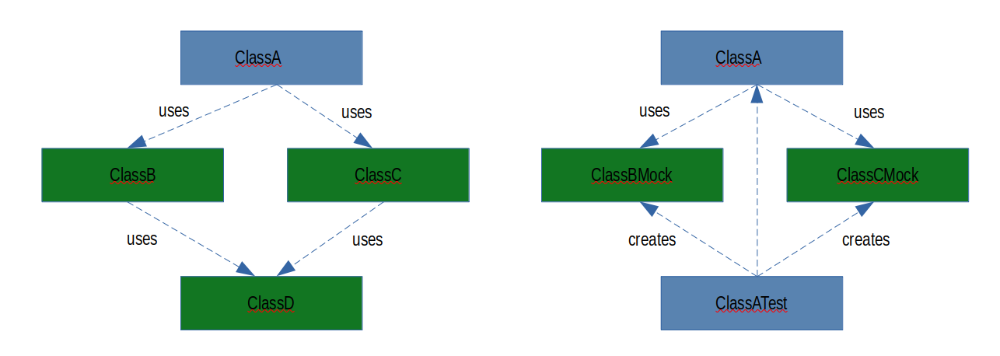
Bonnes pratiques
Si vous n’avez pas encore de tests, ou pas le temps de coder une suite de tests complète, démarrez par des tests fonctionnels.
Sur les parties critiques de votre application, renforcez vos tests fonctionnels avec des tests unitaires
Ne faites surtout pas de tests unitaires pour toutes vos fonctions, lors d’un test unitaire vous testez toujours une fonctionnalité, mais sans qu’elle ne soit impactée par les autres modules en amont ou en aval.
Ne cherchez pas à atteindre les 100% de couverture de code sur l’intégralité de votre code.
Ne pas effectuer des tests unitaires sur du code généré automatiquement ou sur du code identifié comme boilerplate (getters, setters)
Bonnes pratiques
Tester de petits morceaux de code de manière isolée
Adopter la méthodologie « AAA » : Arrange, Act, Assert
Dans la première étape, vous organisez les choses pour les tests : Arrange (contexte requis pour l’exécution du test et résultats attendus).
Ensuite, vous agissez : Act. Ici, vous appelez la fonction testée et stockez ses résultats.
Maintenant, vous affirmez si l’hypothèse est correcte : Assert. C’est l’essence d’un test unitaire, car cette partie teste enfin quelque chose. Le but est de vérifier si le résultat obtenu correspond à celui attendu.
La méthode « AAA » s’apparente à la méthodologie « BDD » (Behaviour Driven Development) avec Given-When-Then.
Bien aérer son test en ajoutant des commentaires pour distinguer les sections Given-When-Then.
Bonnes pratiques
Garder les tests courts
Les fonctions courtes sont beaucoup plus faciles à lire et à comprendre.
Puisque nous testons un morceau de logique à la fois, les tests ne devraient pas dépasser quelques lignes de code de toute façon.
Rendre les tests simples
Évitez la logique complexe dans les tests.
Comme tout autre code, les tests sont également soumis à une refactorisation. Il faudra trouver un bon équilibre entre simplicité et répétitivité.
Rendre les tests performants
Les tests unitaires doivent pouvoir s’exécuter sur toutes les machines. Votre équipe devrait les exécuter plusieurs fois par jour.
Ils s’exécuteraient à la fois pendant les builds locaux et dans votre Intégration Continue.
Les tests unitaires doivent être rapides.
S’assurer de « mocker » toutes les dépendances externes qui pourraient le ralentir, comme les appels d’API, les bases de données ou l’accès au système de fichiers.
Bonnes pratiques
Couvrir d’abord les cas passants
Ce sont souvent les tests les plus simples à écrire.
Tester ensuite les cas plus complexes, non passants
Il s’agit ici de tester des choses qui ne sont pas censées se produire trop souvent : mauvaise entrée, arguments manquants, données vides, exceptions dans les fonctions appelées, etc.
Les outils de couverture de code peuvent aider à trouver des branches de code qui n’ont pas encore été testées.
Écrire d’abord des tests avant de corriger les bogues
Écrire le test qui permet de reproduire le bogue.
Vous laisserez un excellent test de régression pour repérer ce bogue à l’avenir. Et vous saurez que vous l’avez correctement corrigé lorsque le test qui a précédemment échoué commencera à réussir.
Bonnes pratiques
Garder les tests « Stateless » (sans état)
Los tests ne doivent rien changer en dehors de leur portée ou laisser des effets de bord.
Les tests doivent être indépendants les uns des autres.
Si vous avez besoin d’un arrangement répétitif complexe, utilisez les mécanismes de configuration (setup ou teardown) fournis par les frameworks.
Écrire des tests déterministes
Si le test réussit - il devrait toujours réussir, et s’il échoue - il devrait toujours échouer.
L’heure de la journée, la disposition des étoiles ou le niveau de la marée ne devraient pas affecter cela.
Bonnes pratiques
Utiliser des noms descriptifs
La première chose que vous voyez lorsque le test échoue est son nom (correspondant au nom de la méthode).
Ne pas avoir peur d’un nom de méthode à rallonge (par exemple it('should return 0 for an empty cart') est bien meilleur que it('works for 0') ou it('empty cart')). Le nom de la méthode devrait fournir suffisament d’informations pour comprendre ce que fait le test.
Utiliser des noms explicites normalisés comme par exemple givenEmptyCart_whenCalculateTotal_thenReturnsZero()
Tester une exigence à la fois
Utiliser une assertion par test et privilégier les assertions spécifiques (Assert.assertEquals("AA", "BB") est plus précis que Assert.isTrue("AA".equals"BB"))
Comment faciliter l’écriture de tests unitaires
Mockito est un framework Java, permettant :
de mocker ou espionner des objets,
simuler et vérifier des comportements,
ou encore simplifier l’écriture de tests unitaires.
A quoi sert un mock ?
Exemple dans une Architecture Hexagonale sur les principes du Domain Driven Development (DDD) :
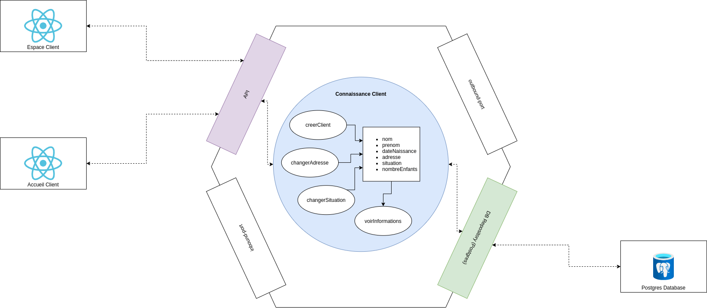
Domain Driven Development (DDD)
L’approche DDD vise, à isoler un domaine métier avec les caractéristiques suivantes:
Approfondissement des règles métier spécifiques en accord avec le modèle d’entreprise, la stratégie et les processus métier.
Isolation des autres domaines métier et des autres couches de l’architecture de l’application.
Modèle construit avec un couplage faible avec les autres couches de l’application.
Facilement maintenable, testable et versionnable.
Modèle conçu avec le moins de dépendances possibles avec une technologie ou un framework.
Architecture Hexagonale
« Permettre à une application d’être pilotée aussi bien par des utilisateurs que par des programmes, des tests automatisés ou des scripts batchs, et d’être développée et testée en isolation de ses éventuels systèmes d’exécution et bases de données. »
Alistair Cockburn en 2005 (hexagonal architecture).
L’architecture hexagonale repose sur trois principes et techniques:
Séparer explicitement la logique métier de la partie exposition (client-side) et persistence (server-side).
Les dépendances partent des couches techniques (client-side / server-side) vers la couche logique métier
Il faut isoler les couches en utilisant des ports et des adaptateurs
Approche Behavior Driven Development (BDD)
En effet, il sera très intuitif d’écrire son test en suivant la notion //Given //When //Then, et nous verrons que Mockito met l’accent sur la 1ère et la 3ème notion.
Greffer Mockito sur une classe JUnit
Deux possibilités :
Ajouter l’annotation
@RunWithcomme suit :
@RunWith(MockitoJunitRunner.class)
public class MyTestClass {
}Ou à l’initialisation dans la méthode d’initialisation (ici
setUp())
private AutoCloseable closeable;
...
@Before
public void setUp() {
closeable = MockitoAnnotations.openMocks(this);
}
@After
public void tearDown() throws Exception {
closeable.close();
}Il est conseillé de libérer la ressource après chaque test (voir méthode
tearDown()).
Le stubbing
Mockito est capable de « stubber » (bouchonner) des classes concrètes mais aussi des interfaces.
On peut appeler la méthode
mock(…)sur une classe :
User user = Mockito.mock(User.class);
Ou placer une annotation si la variable est en instance de classe
@Mock User user;
Définition du comportement des objets mockés ou « Stubbing »
Retour d’une valeur unique
Mockito.when(user.getLogin()).thenReturn(‘user1’);
Faire appel à la méthode d’origine
Mockito.when(user.getLogin()).thenCallRealMethod();
Levée d’exceptions
Mockito.when(user.getLogin()).thenThrow(new RuntimeException());
Espionner un objet avec @Spy
La différence entre
@Mocket@Spyréside dans le fait que la deuxième permet d’instancier l’objet mocké; on peut ainsi effectuer un mock partiel.Quand on appelle une méthode de l’objet « espionné »
la vraie méthode est appelée,
à moins qu’un comportement ai été défini.
@Spy User user = new User(‘user1’); user.getLogin() // retourne user1 Mockito.when(user.getPassword()).thenReturn(‘top secret’);
Vérification d’interactions
verify(user).getLogin(); // le test passe si getLogin() est appelée avant la fin du timeout (ici 100 ms) verify(user, timeout(100)).getLogin(); // le test passe si il n'existe aucune autre interaction sur le mock (non vérifiée) verifyNoMoreInteractions(user);
Injection
Mockito permet également d’injecter des ressources (classes nécessaires au fonctionnement de l’objet mocké), en utilisant l’annotation
@InjectMock.L’injection des mocks dans l’objet marqué par
@InjectMockse fera (par ordre de priorité) :injection par le constructeur
injection par la méthode de type « setter »
injection par l’attribut (même si celui-ci est
private)
L’automatisation
Plateforme Intégration Continue
PIC : Plateforme agrégeant des outils permettant l’IC

Job classique

Principaux avantages
Test immédiat des modifications
Notification rapide en cas de problèmes
Les problèmes d’intégration sont détectés et réparés de façon continue